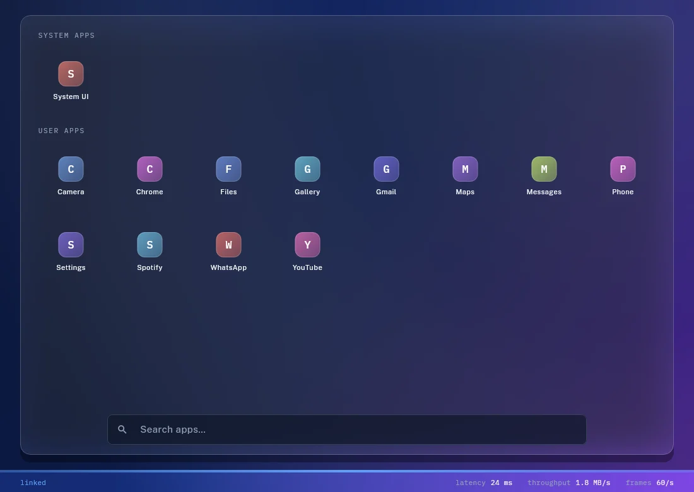
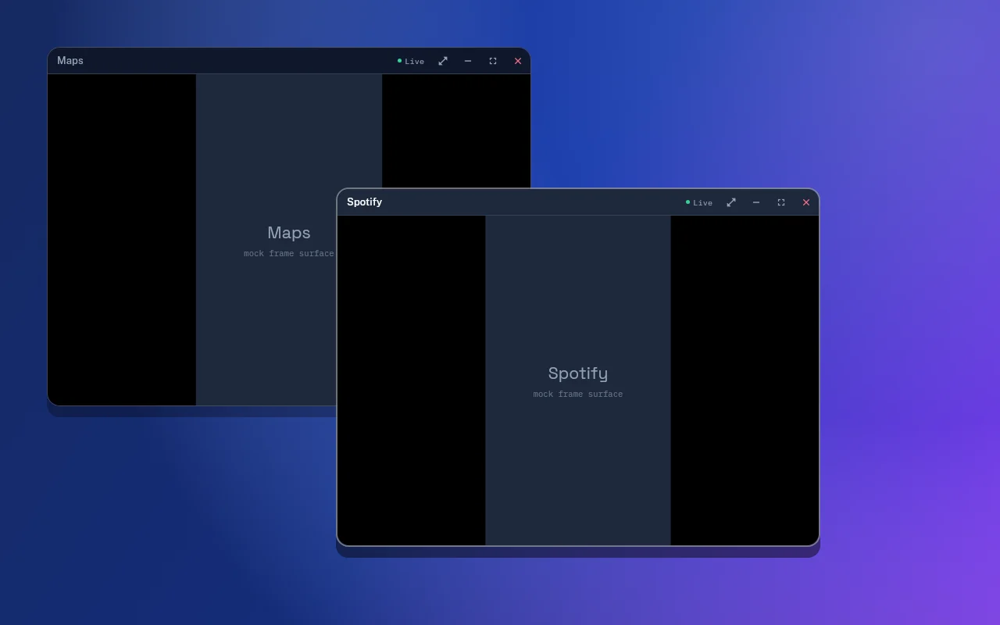
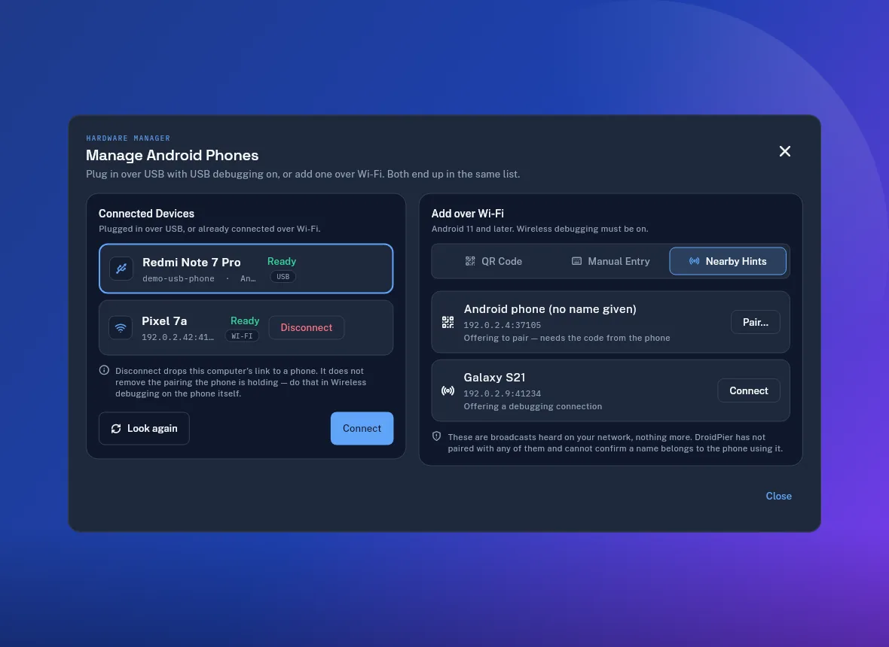

WINDOWS / MULTI-APP
Arrange separate app windows
Open, resize, maximize, minimize, and close multiple Android activities from one Linux workspace.

Linux and Android beta
Launch separate app windows over USB or Wi-Fi. Your Android phone runs the apps. Linux becomes the workspace.
Free under Apache-2.0. Linux x86-64 packages available now.

01 / Workspace
DroidPier launches apps on your phone and presents them as movable desktop windows. Keyboard and pointer input travel back through the authenticated ADB connection.
Open, resize, maximize, minimize, and close multiple Android activities from one Linux workspace.

Start with USB, discover nearby wireless debugging endpoints, scan a local QR code, or enter pairing details manually.

The device link stays between your computer and phone. Clipboard sync and notification access remain optional.
Read the privacy model02 / Connection
Enable Android developer options and approve USB debugging, or use wireless debugging on a trusted network.
DroidPier discovers launchable applications after its signed companion and shell agent are ready.
Move and resize app windows while your phone continues to execute the Android applications.
Good to know: DroidPier is not an Android emulator. A compatible phone remains connected while you work.
03 / Availability
Download the package for your system. Every release includes checksums, notices, matching dependency sources, and the same signed companion APK.
Desktop audio forwarding is not available. DRM-protected or secondary-display-restricted apps may refuse to run. Performance and behavior vary by device, Android version, network, and Linux graphics stack.
Check compatibility details04 / Answers
Install DroidPier, connect an Android phone with USB debugging or wireless debugging, and select an app from the desktop drawer. The app executes on your phone and appears in a Linux window.
No. DroidPier uses your connected Android device. This avoids installing a separate Android system image, but the phone must remain available.
Yes, on Android versions that support wireless debugging. DroidPier offers nearby discovery, QR pairing, and manual pairing. Network isolation or blocked multicast can prevent discovery.
Yes, when the device and app permit secondary displays. Each supported app can occupy its own movable desktop window.
Not in the current beta. Media controls can control supported playback on the phone, but desktop audio forwarding is not implemented.
DroidPier requires no account, analytics, advertising, or cloud relay. The original project code is available under Apache-2.0. Bundled components retain their own licenses.
v0.1.0-beta.2
Start with the Linux package that fits your system and follow the guided connection screen.